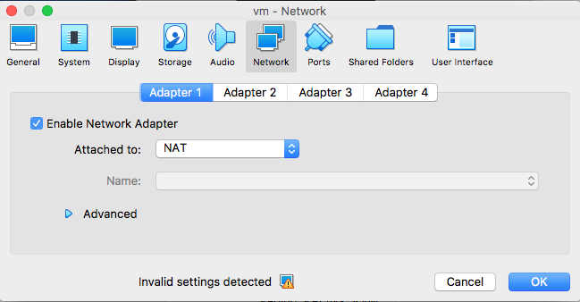
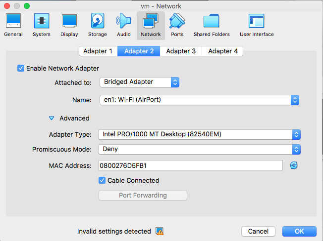
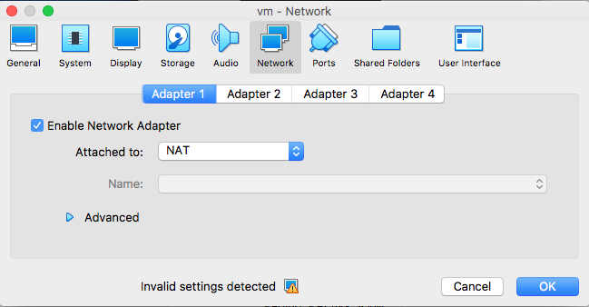
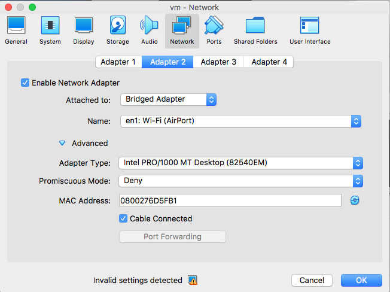
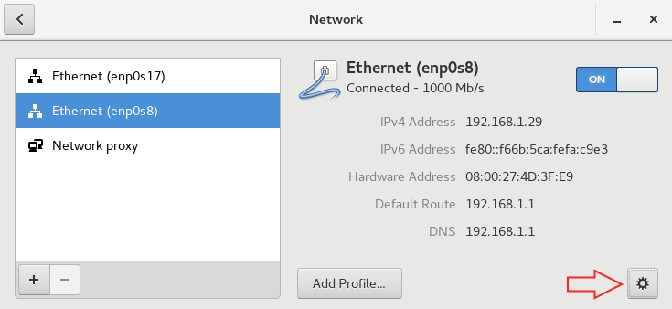
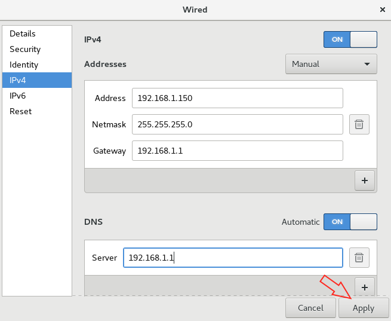
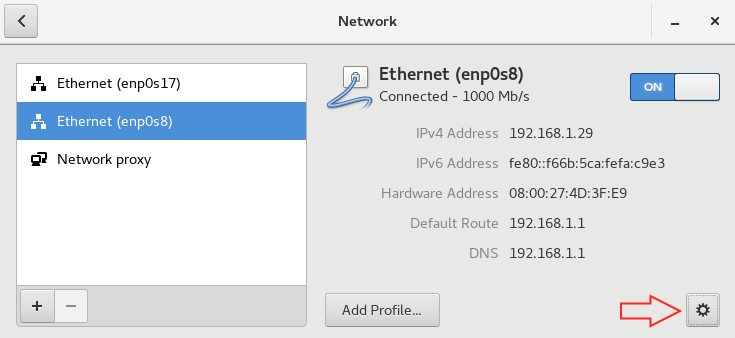
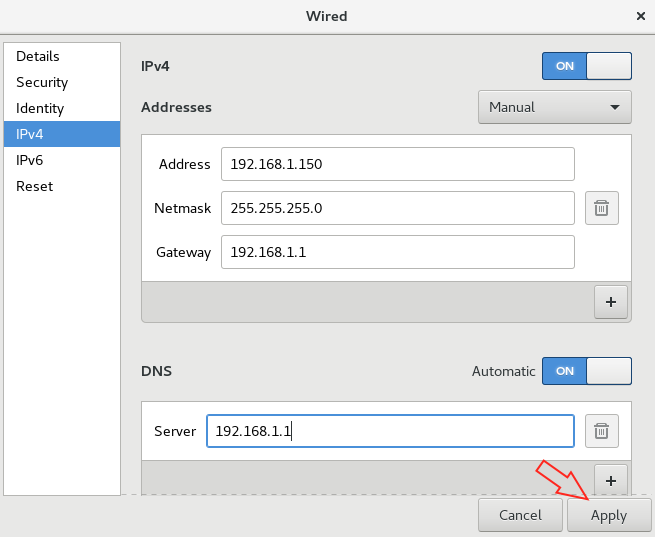
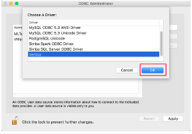
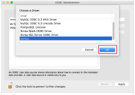

VerticaPy
Installation
Setting up the environment is crucial. That's why each step will be well detailed. To be able to enjoy the most of VerticaPy, let's see how to:
- Install Vertica
- Making the VM IP address static - Optional
- Create a DataBase DSN (Data Source Name) - Optional
- Install Python3
- Install Jupyter - Optional
- Install VerticaPy
If you already have Vertica and Python3 installed in your environment. To install VerticaPy, just run the following command.
pip3 install verticapyVertica Installation
Vertica is the most advanced analytics data warehouse based on a massively scalable architecture with the broadest set of analytical functions spanning event and time series, pattern matching, geospatial and end-to-end in-database machine learning. Vertica enables you to easily apply these powerful functions to the largest and most demanding analytical workloads, arming you and your customers with predictive business insights faster than any analytics data warehouse in the market.
Vertica provides a unified analytics platform across major public clouds and on-premises data centers and integrates data in cloud object storage and HDFS without forcing you to move any of your data.
To learn more about the Vertica DataBase, you can go to the Vertica Official Website.
If you already have Vertica installed in your Machine, you can skip this step. Otherwise you have 3 options to get Vertica for free.
- You have a machine where Linux is installed and you want to install Vertica Community Edition directly on your Machine. Please look at this video. Tim Donar will explain you how to do it. You can also use the same process if you want to install Linux from scratch in a VM. By choosing this option, you'll be able to get the most of your machine as you'll customize the installation parameters. However, it is much more complicated than the two next options.
- You decide to use the Vertica Community Edition VM. In this case, follow the instructions of the Vertica Community Edition Virtual Machine Installation Guide.
- You decide to use a Vertica machine remotely by subscribing to the Vertica Academy program. It is free and you can get a remote access to a machine by sending a mail to the Vertica Academy team.
Making the VM IP address static - Optional
This step is essential if you want to work from your own OS environment rather than directly in the VM. To be able to create a bridge between your OS and your VM. To create a communication between your OS and the VM. Open the parameters of your VM and create a second adapter (Adapter 2) and set it to bridged adapter.
 



Look at the IP address of your machine using the ifconfig command in your Terminal.
As my local inet is 192.168.1.8, let's pick 192.168.1.150 as static IP address for my VM (I could choose 192.168.1.x as long as it is not taken by another machine). Let's make our VM IP address static. Go to the network configuration of your VM and change the IPV4.
 



Turn the connection off and on.
You can now forget your VM as long as you turn it on and you are connected to a network (even one which does not work is enough to make your machine believe that it is connected). From now, you can control remotely your VM using an SSH to dbadmin@192.168.1.150
Create a DataBase DSN (Data Source Name) - Optional
Creating DSN can make you win a lot of time when working with DataBases. To create a DSN, you can follow the instructions in the Vertica Website.
As the DSN configuration could be a little bit more complicated in MACOS due to some updates. Let's see the different steps that you may have to do.
Vertica includes its own drivers for different platforms, included MacOS. Just download the drivers from the Vertica Website.
Select your version of Vertica and download the corresponding pkg package to install in your operating system. Vertica client drivers have backwards compatibility since version 8.1.0. So, for example, it is ok if we install version 9 client drivers and connect to 8.1.1 Vertica database. Once the pkg file is dowloaded it can be installed on the system by double clicking in the file. Be aware that the package is downloaded from an unknown developer, so MacOS is going to ask for permission to install it. To do this just go to System Preferences > Security and Privacy > General and accept the installation.
If we didn't change the location of the installation, the new Vertica drivers should be installed in folder "lib" located at "/Library/Vertica/ODBC/lib". Location can be checked in the Terminal.
root@ubuntu:~$ ls /Library/Vertica/ODBC/lib/There are two files:
- libverticaodbc.dylib - This is the driver
- vertica.ini - Vertica configuration file template for the driver
Once Vertica driver is installed, next step is to customize configuration files in order to use DB DSN, encodings and drivers. The following just need to be configured.
- /Library/Vertica/ODBC/lib/vertica.ini
- ~/Library/ODBC/odbc.ini
- ~/Library/ODBC/odbcinst.ini
- VERTICAINI and ODBCINI system parameters
The easiest way to do this is to use ODBC Administrator, a GUI Tool to configure the odbc.ini and odbcinst.ini The ODBC Administrator can be downloaded at the Apple Website.
Once downloaded and installed, you can add a DSN by double clicking on ODBC Administrator application (in Applications/Utilities/ODBC Administrator) and just do as following.
 



We check then that odbc.ini has the DSN added previously.
root@ubuntu:~$ cat ~/Library/ODBC/odbc.ini
# Output
[ODBC Data Sources]
VMart = Vertica
MLTesting = Vertica
MyMLTesting = Vertica
[ODBC]
Trace = 0
TraceAutoStop = 0
TraceFile =
TraceLibrary =
?.
[MLTesting]
Driver = /Library/Vertica/ODBC/lib/libverticaodbc.dylib
Description = MLTesting on Azure
Servername = vazure
Database = MLTesting
UID = dbadmin
PWD =
Port = 5433The Vertica ini file is already configured by default, but I recommend to copy it to the same place as the other odbc files.
root@ubuntu:~$ cp /Library/Vertica/ODBC/lib/vertica.ini ~/Library/ODBC/
# Change the encoding parameter from UTF-32 to UTF-16 in the copied vertica.ini.
[Driver]
ErrorMessagesPath=/Library/Vertica/ODBC/messages/
ODBCInstLib=/usr/lib/libiodbcinst.dylib
DriverManagerEncoding=UTF-16Last step is to add the environment variables VERTICAINI and ODBCINI. Just write them into your bash_profile (or /etc/profile for system wide).
root@ubuntu:~$ vim ~/.bash_profile
## Adding some parameters to work with ODBC for Vertica
[?]
export ODBCINI=/Library/ODBC/odbc.ini
export VERTICAINI=/Library/ODBC/vertica.ini
[?]Install Python3
Installing Python3 is as easy as downloading a file. Just follow the instructions in the Python Website.
Install Jupyter - Optional
Jupyter offers a really beautiful interface to play with Python. You can install Jupyter by following the instructions in the Jupyter Website.
Install VerticaPy
To install VerticaPy, just run the following pip command.
root@ubuntu:~$ pip3 install verticapy
To be able to connect to Vertica, you'll need to install one of the following modules.
- vertica_python (Native Python Client)
- pyodbc (ODBC)
- jaydebeapi (JDBC)
These modules will give you the possibility to create DataBase cursor which will be used to communicate with your Vertica DataBase.
For example, use the following command to install the vertica_python module.
root@ubuntu:~$ pip3 install vertica_python
If you have created a DSN, you can easily set-up a connection using the following command.
#
#
# vertica_cursor
#
from verticapy import vertica_cursor
cur = vertica_cursor("VerticaDSN")
The Vertica Native Python Client vertica_python is the easiest one to set-up.
#
#
# vertica_python
#
import vertica_python
# Connection using all the DSN information
conn_info = {'host': "10.211.55.14",
'port': 5433,
'user': "dbadmin",
'password': "XxX",
'database': "testdb"}
cur = vertica_python.connect(** conn_info).cursor()
# Connection using directly the DSN
from verticapy.utilities import to_vertica_python_format
dsn = "VerticaDSN"
cur = vertica_python.connect(** to_vertica_python_format(dsn), autocommit = True).cursor()
To create an ODBC connection, pyodbc offers you two possibilities (one with the DSN and one with all the credentials).
#
#
# pyodbc
#
import pyodbc
# Connection using all the DSN information
driver = "/Library/Vertica/ODBC/lib/libverticaodbc.dylib"
server = "10.211.55.14"
database = "testdb"
port = "5433"
uid = "dbadmin"
pwd = "XxX"
dsn = ("DRIVER={}; SERVER={}; DATABASE={}; PORT={}; UID={}; PWD={};").format(driver,
server,
database,
port,
uid,
pwd)
cur = pyodbc.connect(dsn).cursor()
# Connection using directly the DSN
dsn = ("DSN=VerticaDSN")
cur = pyodbc.connect(dsn, autocommit = True).cursor()
The jaydebeapi module offers you the possibility to set-up a JDBC connection.
#
#
# jaydebeapi
#
import jaydebeapi
# Vertica Server Details
database = "testdb"
hostname = "10.211.55.14"
port = "5433"
uid = "dbadmin"
pwd = "XxX"
# Vertica JDBC class name
jdbc_driver_name = "com.vertica.jdbc.Driver"
# Vertica JDBC driver path
jdbc_driver_loc = "/Library/Vertica/JDBC/vertica-jdbc-9.3.1-0.jar"
# JDBC connection string
connection_string = 'jdbc:vertica://' + hostname + ':' + port + '/' + database
url = '{}:user={};password={}'.format(connection_string, uid, pwd)
conn = jaydebeapi.connect(jdbc_driver_name,
connection_string,
{'user': uid, 'password': pwd},
jars = jdbc_driver_loc)
cur = conn.cursor()
You can also, save your credentials in VerticaPy to avoid redundant cursors creations.
from verticapy.connections.connect import *
# Save a new connection
new_auto_connection({"host": "10.211.55.14",
"port": "5433",
"database": "testdb",
"password": "XxX",
"user": "dbadmin"},
method = "vertica_python",
name = "VerticaDSN")
# Set the main auto connection
change_auto_connection("VerticaDSN")